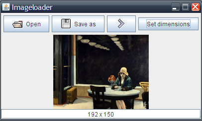
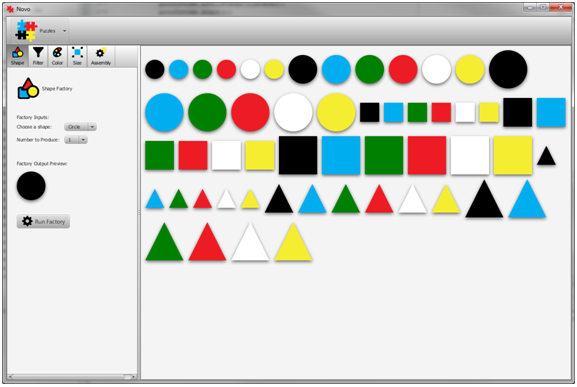
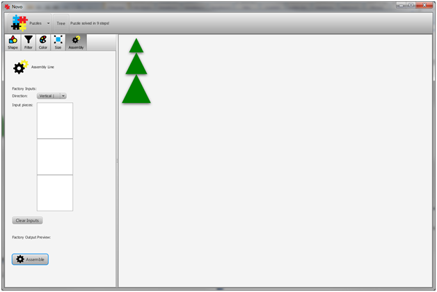

The Procedure Executor window (for the procedure "Resize All Images")
This document describes how to interact with the Adept task learning system in order to automate tasks using Adept-enabled applications. The document provides an overview of the Adept user interface (UI) and describes the processes for learning, saving, and executing procedures.
Bundled with the Adept release are
1) a simple application for image manipulation, and
2) a simple puzzle game called Novo.
Adept operates in parallel with one or more client applications that are Adept-enabled, meaning that they provide instrumentation and automation that are registered with Adept as an action model. (The Adept Client Guide provides additional details on specifying an action model.) Initiating task learning thus requires starting first Adept and then the Adept-enabled application(s) in which tasks are to be demonstrated.
Starting Adept brings up its main UI window, pictured below, which is referred to as the Procedure Management window.
As described in the section Managing Learned Procedures, this window provides access to manage procedures that have been learned. Clicking the "Demonstrate" button will open a "Procedure Demonstrator" window (pictured below) that provides the controls for teaching a task to the system. [The process of creating a learned procedure through demonstration of a task is described in the section Creating a Learned Procedure.]
The "Run" button in the lower right-hand corner of the Procedure Management window enables execution of a learned procedure, as described further in the section Executing a Learned Procedure. It is disabled until you select a procedure in the Procedure Management window. Clicking the "Run" button opens a "Procedure Executor" window (pictured below) to enable user control of the execution process.
Image Loader comes with a folder containing a few sample images. It is installed at:
Initial state when starting Image Loader
Image opened

Image resized
Novo is a simple puzzle game in which the user is asked to construct various objects and scenes from primitive game pieces. A piece is defined by its shape, size and color. Novo provides a few puzzles out of the box but also allows the user to play in an open-ended fashion and explore some of the capabilities of the task learning system. Be sure Adept is running and that you have a Demonstrator window open with the Record button pressed before trying to learn procedures for Novo.
To open a puzzle in Novo, click the "Puzzles" button on the main toolbar and choose a puzzle to open. A good first puzzle to try is the 'Tree' puzzle. If you select 'Tree', Novo will open the starting configuration for the Tree puzzle and, in a popup window, display the goal of the puzzle.
You can move the window that depicts the goal of the puzzle to the side so you can reference it while working on the puzzle. Or, you can dismiss it. If at any time you would like to view the goal depiction again, simply click the button that says 'Tree' on the main toolbar (circled in red in the above screenshot).
If you just want to play with Novo and don't want to solve a specific puzzle, go to the Puzzles button on the main toolbar and select 'Blank Canvas'.
There are five tools to assist you in solving a puzzle. They are as follows:
Every factory is available from the factory toolbar on the left side of the game window. Let's try solving the Tree puzzle.
The Factory toolbar is highlighted by a red rectangle in this image
Clicking each button on the Factory Toolbar will cause the corresponding factory to open below. Let's begin with the Shape Factory. We know we'll need at least three triangles to solve the puzzle and we already have one. So let's generate two additional triangles:
Once you have a factory configured correctly, press the 'Run Factory' to make things happen.
There are now enough triangles to solve the puzzle. However, the circle is a bit pesky and doesn't contribute to solving the puzzle. We can filter it out using the Filter Factory. Choose the Filter Factory by clicking the "Filter" button on the factory toolbar. Configure the Filter Factory as shown below to remove the circle:
Next, let's make our three triangles green. First, open the Color Factory. Then, click and drag one of the triangles from the working area in to the "Input piece" socket in the Color Factory.
Dragging a piece in to the Color Factory to produce a copy with a different color
Once the black triangle is in the socket, select 'Green' for the color of the new piece. Then press the 'Run Factory' button. Repeat this for all three triangles.
Next we need to make the triangles different sizes. To do this we'll use the Size Factory. Open the Size Factory, and drag one of the green triangles into the 'Input piece" socket. Choose 'Small' for the size and run the factory. Do this a second time but specify 'Large' to create a large green triangle. We don't need to create a medium green triangle since we already have one.
The last step required to solve the puzzle is to use the Assembly Factory to assemble our three triangle pieces in to a tree. First, open the Assembly Factory. Unlike the previous two factories, the Assembly Factory has three sockets for input pieces. Two or more input pieces are sufficient to run the Assembly Factory. First, configure the 'Direction' of the Assembly Factory to be vertical since that is how we want our pieces configured. Then, drag the three triangle pieces in to the input sockets of the factory in increasing size from top to bottom. Use the factory preview at the bottom of the Assembly Factory to verify that the tree is being constructed properly.
Once the Factory Output Preview looks like a tree press the 'Run Factory' button to run the factory and create the tree.
Congratulations, you've solved your first puzzle in Novo!
New procedures are created by using the Procedure Demonstrator window, which is accessible from the main Adept UI window. To demonstrate a procedure, open the Procedure Demonstrator via the "Demonstrate" button and click "Record." This notifies Adept that it should accept actions from Adept-enabled applications and use them to create a procedure. Actions are tracked in the Procedure Demonstrator window as they are performed. For example, the window below shows a trace of three steps that have been performed as part of a demonstration within the Image Loader application.
Procedure Demonstrator window with an action trace for a demonstration with the Image Loader application
Care should be taken to wait for an action to fully complete, and for its instrumentation to appear in the Procedure Demonstrator window, before demonstrating the next action (or before completing the demonstration with the "Finish" button). Otherwise, the actions could appear in an unintended order (or possibly be omitted from this demonstration and included in the next).
Actions in the demonstration trace are deleted individually using the "Delete Action" button or are all deleted using the "Clear" button. Demonstration is temporarily paused by using the "Pause" button, which tells Adept to retain all already demonstrated actions but not to include any new ones until the "Record" button is again hit.
When done demonstrating a procedure, press the "Finish" button to cause the procedure to be learned. This produces a three-part display (see below) that summarizes the parameters, the generalized action sequence, and the outputs of the procedure. Each parameter is assigned as a default the value used in the demonstration; however, a user can modify those values before saving the procedure. Parameters are discussed further in the section Executing a Learned Procedure below.

If the procedure is satisfactory, the user can press the save button and a dialog window will appear where the user can assign a meaningful name and save the procedure for subsequent execution. Prior to pressing the save button, the user may choose to provide a description of the procedure in the text box at the top of the preview.
When saved, the newly learned procedure appears in the list of available procedures in the Procedure Management window.
Procedures are run using the Procedure Executor window, which is accessed by selecting a procedure and clicking "Run" from the main UI. From here, input parameters are specified before executing the procedure, or the procedure is simply run with the default values for parameters.
If the default parameter values are accepted, then executing the procedure performs the exact same task as when the procedure was demonstrated. However, if any default values are changed, the executed procedure performs a task similar to, but not identical to, the demonstration that created the procedure. This illustrates perhaps the most powerful feature of Adept: generalizing the demonstrated behavior rather than re-executing it verbatim.
Pressing the "Run" button executes the procedure. Pressing the "Cancel" button closes the window.
If an error occurs during the execution of a procedure, a popup window appears. For example, an error can occur if invalid inputs are entered, such as a nonnumeric value for a numeric parameter.
It is perfectly valid to execute a procedure during a demonstration. The procedure name appears in the demonstration
window along with its parameters, similar to other actions. The resulting learned procedure will invoke it.
This allows complex procedures to be built out of simpler ones.
When a learned procedure is saved after a demonstration, it becomes available not only for execution but also for visualization and editing. This functionality is accessed within the Adept UI window by clicking on the "Edit" button. This launches another window called the "Procedure Editor".
If a procedure is selected at the time the "Edit" button is clicked, the Procedure Editor will open that procedure directly. Otherwise, the Procedure Editor will open and the user may either create a new procedure (manually), or open an existing procedure using the "Open" button in the Procedure Editor's toolbar.
The Procedure Editor is a powerful application. Its functionality is more fully described in the Editor Guide.
Procedures are stored as individual files in the user's file system persistence directory.
This directory is at an operating-system-dependent location:
%APPDATA%\AdeptTaskLearning\lumen\0_4
(%APPDATA% refers to the location where the various Windows operating systems
store application data).
The file name of the procedure is <procedure-name>.procedure.
Neither the persistence directory location nor the procedure file names need to be known to
operate Adept. However, this information may be useful for system operations such as
backing up and restoring files.
Selected procedures may be renamed or deleted through the "Manage" drop-down menu. A procedure can be exported to another file location to facilitate sharing procedures with other users. The import command brings a procedure exported in this manner by another user into the user's persistence directory.
A structure has a fixed number of elements, each identified by a unique name. For example, an application might represent a postal address as a structure with elements for street number, street name, city, state, and postal code. A person might be represented as a structure with a first name, last name, sex, and age. When a structure is used as a parameter in a learned procedure, it appears as a button with preview text in the Procedure Executor window. Clicking the button will open a dialog that allows you to view and edit the individual values that comprise the structure.
The Novo application uses a structure to represent a piece; its three elements are its shape, size and color. The following screenshot shows an example Novo procedure that accepts a game piece as input:
A collection may have any number of elements, including zero. All elements of a collection are of the same type. For example, an application could have a collection of persons and a collection of addresses, but could not have a collection containing both.
When a collection is used as a procedure input, it appears as a button with preview text, similar to a structure input. Clicking the preview button results in a dialog appearing that allows for the following operations:
In Image Loader, the contents of a directory are represented as a collection of files, while the file extensions (such as "bmp" or "gif") used as format filters for selecting images are represented as a collection of strings.


There are three types of collections: lists, sets, and bags.
The elements in a list are ordered while the elements of a set are not;
as discussed in the next section, ordering can impact the structure of procedures learned by Adept.
Bags are like sets except that they allow duplicate elements.
The three collection types are displayed in a similar manner.
Suppose that you have a folder of image files, each of which you want to resize into a thumbnail-sized image.
If the folder contains two image files (e.g., John.jpg and Mary.jpg),
then Adept could learn a procedure for accomplishing this task from the following demonstration:
The learned procedure for this demonstration is:
This procedure, while correct for handling exactly two files, is not very versatile. A potentially more useful procedure would resize all image files in a directory, regardless of how many there are. Adept can learn a more general procedure of this type from the following demonstration.
The only difference between this demonstration and the previous one is that the folder containing the images is first opened. This action produces a data value that is a collection of all the image files in the folder. From this demonstration, Adept learns the following procedure:
Adept recognizes that each element in the collection is resized identically, and so learns a procedure that repeats the open and resize sequence for all of the images in the folder. (In computer programming, such repeated sequences of actions are called loops.)
It is not necessary to tell Adept that you want to learn a repetitive task. Rather, Adept will recognize these tasks by the presence in the demonstration of repeated actions over the elements of a collection, providing the following conditions are met: